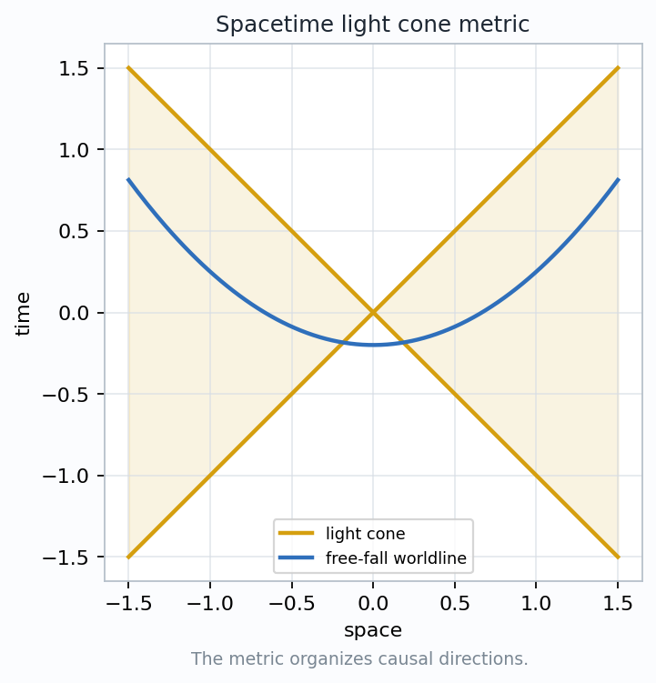
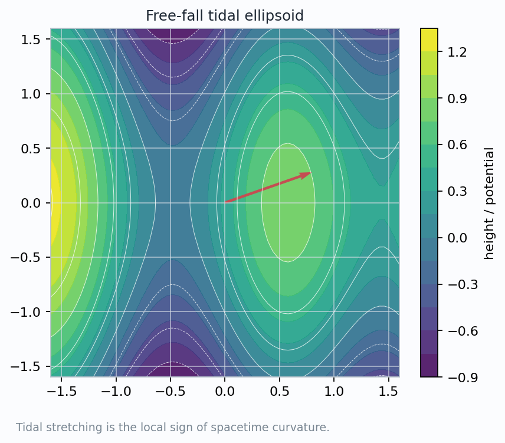
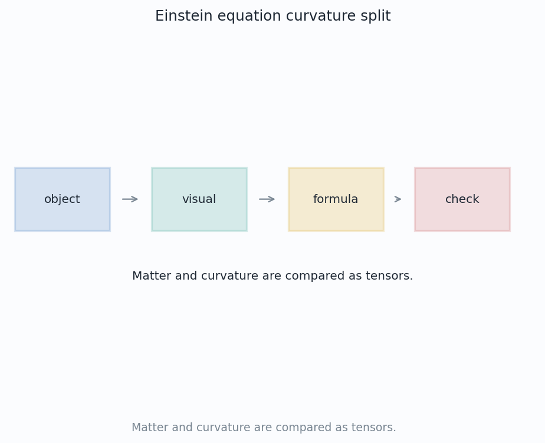
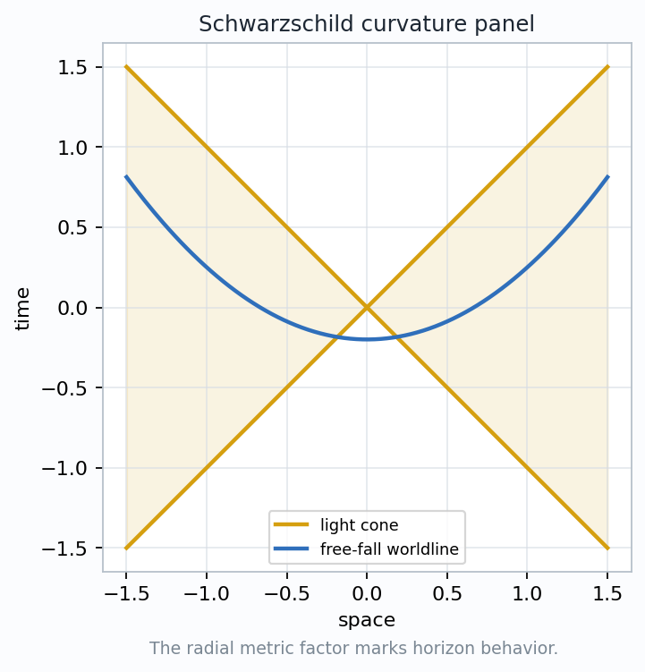
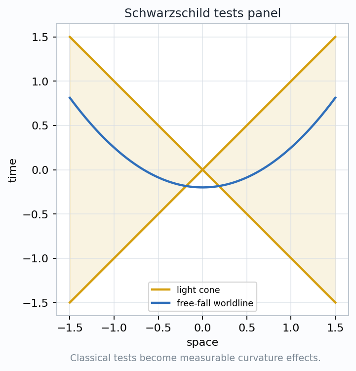

Visual Differential Geometry and FormsChapter 30
Einstein's Curved Spacetime
Gravity becomes a statement about metric signature, geodesics, curvature, and the stress-energy ledger.
Chapter Question
How does curved spacetime encode gravity as geometry?
Metric
light cones and clocks
Geodesics
free-fall worldlines
Matter
stress-energy tensor
Lecture Route
metric → transport → curvature → field equation
Culmination
The metric is no longer just a way to measure lengths. It becomes the dynamical object whose curvature is read as gravitation.

The chapter begins by turning causal directions into metric geometry.
Visual Differential Geometry and FormsChapter 30
The Equivalence Principle Has A Curvature Remainder
Local cancellation
At a chosen event, a freely falling observer can make ordinary gravitational acceleration disappear from the frame.
What remains
Neighboring free-fall paths do not stay perfectly parallel. Their relative acceleration is measurable.
Geometric Reading
gravity at a point can be framed away; tidal curvature cannot.
Pedagogical target
The equivalence principle points toward curvature because it leaves behind a second-order comparison.
Visual Differential Geometry and FormsChapter 30
The Metric Draws Causal Geometry
The metric organizes directions into timelike, null, and spacelike classes.
Lorentzian Signature
$$ds^2=-c^2dt^2+dx^2+dy^2+dz^2$$
Timelike
possible massive worldlines
Spacelike
outside causal reach
Invariant
causal sorting survives coordinates
Metric role
The sign pattern is not a convention on a page. It is the local rule that tells clocks, light rays, and observers what counts as a possible direction.
Visual Differential Geometry and FormsChapter 30
Free Fall Means Geodesic Motion
Transport statement
A free particle carries its velocity vector along its own worldline without external forcing.
Coordinate Form
$$\frac{d^2x^\mu}{d\tau^2}+\Gamma^\mu_{\alpha\beta}\frac{dx^\alpha}{d\tau}\frac{dx^\beta}{d\tau}=0$$
Same course idea
Parallel transport is now being used in spacetime. The connection tells how local inertial frames change from event to event.
Reading tip
Christoffel symbols are not a new force. They are the coordinate expression of the metric's comparison rule.
Visual Differential Geometry and FormsChapter 30
Tidal Stretching Reads The Riemann Tensor

Tidal stretching is the local sign of spacetime curvature.
What the image measures
A small ball of free-falling test particles deforms into an ellipsoid when neighboring geodesics accelerate differently.
Geodesic Deviation
$$\frac{D^2\xi^\mu}{d\tau^2}=-R^\mu{}_{\nu\alpha\beta}u^\nu\xi^\alpha u^\beta$$
Objects in the formula
\(\xi\) is the separation vector, \(u\) is the reference velocity, and \(R\) is the curvature tensor.
Inspection target
Gravity becomes visible through relative acceleration, not through a single particle's absolute acceleration.
Visual Differential Geometry and FormsChapter 30
Stress-Energy Is The Source Ledger
Matter Field Content
$$T_{\mu\nu}=\begin{bmatrix}\rho & \text{flux}\\ \text{momentum} & \text{stress}\end{bmatrix}$$
Energy density
How much energy an observer measures in a local volume.
Momentum and flux
How energy and momentum flow across local surfaces.
Pressure and shear
How matter pushes, pulls, and stores directional stress.
Visual Differential Geometry and FormsChapter 30
Einstein's Equation Matches Two Tensors

The notebook keeps the equation tied to an object, a visual, a formula, and a check.
$$G_{\mu\nu}+\Lambda g_{\mu\nu}=\frac{8\pi G}{c^4}T_{\mu\nu}$$
\(G\)curvature summary built from the metric, Ricci curvature, and scalar curvature.
\(\Lambda\)cosmological term: uniform curvature contribution at large scales.
\(T\)stress-energy tensor: local matter, radiation, momentum flux, and pressure.
Tensor equality
The equation compares geometric and physical ledgers in a form every coordinate system must respect.
Visual Differential Geometry and FormsChapter 30
Schwarzschild Geometry Is A Vacuum Test Case
Outside a spherical mass
The vacuum equation \(T_{\mu\nu}=0\) still admits curved geometry because the central mass sets boundary conditions.
Schwarzschild Line Element
$$ds^2=-\left(1-\frac{2GM}{rc^2}\right)c^2dt^2+\left(1-\frac{2GM}{rc^2}\right)^{-1}dr^2+r^2d\Omega^2$$
Horizon signal
The radial metric factor changes behavior at \(r=2GM/c^2\) in these coordinates.
Geometric lesson
A vacuum region can be Ricci-flat while still carrying curvature measured by tidal effects and geodesics.

The radial metric factor marks horizon behavior.
Visual Differential Geometry and FormsChapter 30
Classical Tests Become Curvature Effects

Classical tests become measurable curvature effects.
Orbit shift
geodesic precession near a mass
Light bending
null geodesics curve with the metric
Clock shift
time components affect frequency
Timing delay
paths and clocks both change
One Reading Habit
observed effect = metric probe + geodesic or clock comparison
Visual Differential Geometry and FormsChapter 30
The Chapter's Geometric Contract
Stress-energy
matter, radiation, pressure, flux
→
Metric
light cones, clocks, distances
→
Curvature
tidal effects, waves, horizons
$$T_{\mu\nu}\quad\longleftrightarrow\quad G_{\mu\nu}+\Lambda g_{\mu\nu}$$
Object
worldline, light cone, tensor, metric
Visual
diagram that names what to inspect
Formula
coordinate shadow of the geometry
Check
saved assertion that the idea survives